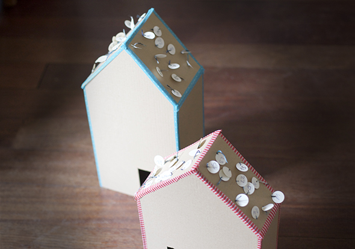
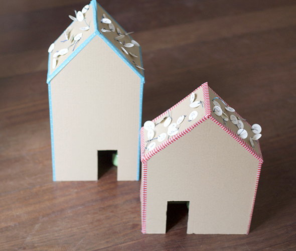

¡Por fin terminados, en el último minuto! Los calendarios de Adviento de este año: se tira del punto con el número del día, se corta el hilo y el regalito cae. Metiendo la mano por la puerta se saca. ¡Tal como lo quería Noah! ;-)

